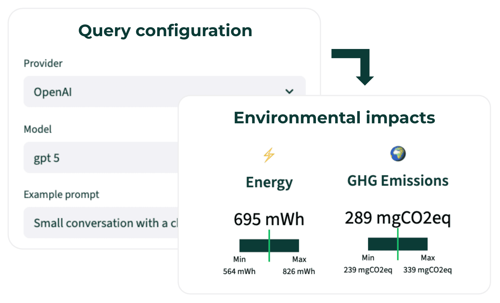

¶
Estimate and track the environmental footprint of GenAI models at inference.
Made with 💚 by CodeCarbon non-profit.
Project¶
EcoLogits is a suite of open source tools for estimating the environmental footprint of generative AI models at inference. Based on life-cycle assessment principles, the project raises awareness about the direct environmental impacts of AI while empowering developers and organizations to build more sustainable AI-powered applications.
- Open & transparent – Code, methodology, and data are openly accessible.
- Ease of use – Emphasizes on seamless integration and user experience.
- Community-driven – Continuously built and improved collaboratively.
Tools¶
EcoLogits Calculator

A user-friendly web tool for estimating the environmental footprint of AI models with just a few clicks.
EcoLogits
A Python library to track environmental impacts of AI requests made through official client SDKs.
Learn more
EcoLogits.js
A JavaScript and TypeScript library to estimate the environmental impacts of generative AI.
Learn more
EcoLogits API
An API service enabling integrations of our impact assessment methodology into your applications.
Learn more
CodeCarbon
Local computeTrack the energy use and CO₂ emissions of code running on your own hardware or cloud VMs.
Learn more
Contributors¶
People who contribute significantly to the project.


Sponsors¶
Organizations who make this project possible.
Acknowledgements¶
EcoLogits is part of the CodeCarbon non-profit. Together aim to build open and robust tools to assess and reduce the environmental footprint of AI.
We extend our gratitude to Data For Good and Boavizta for supporting the development of this project. Their contributions of tools, best practices, and expertise in environmental impact assessment have been invaluable.